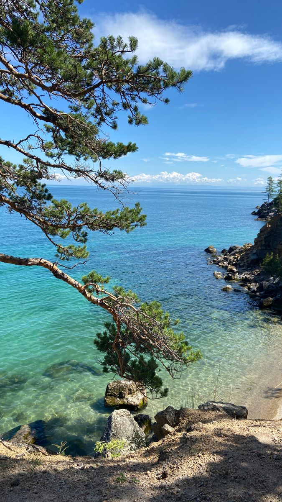
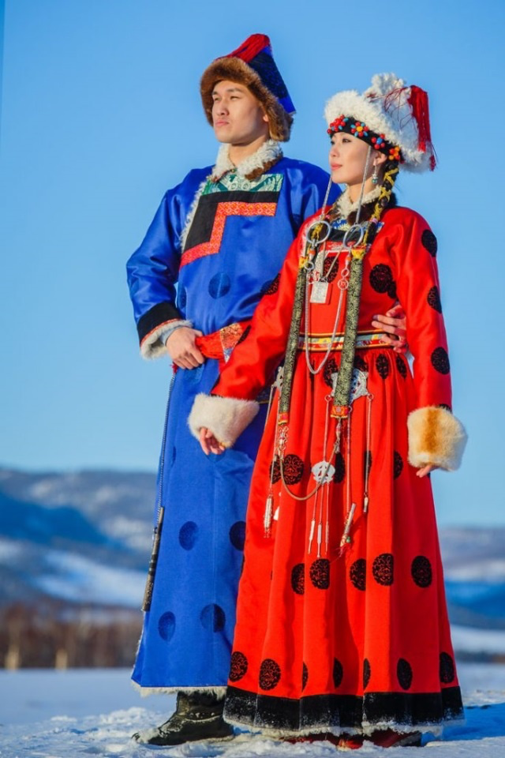
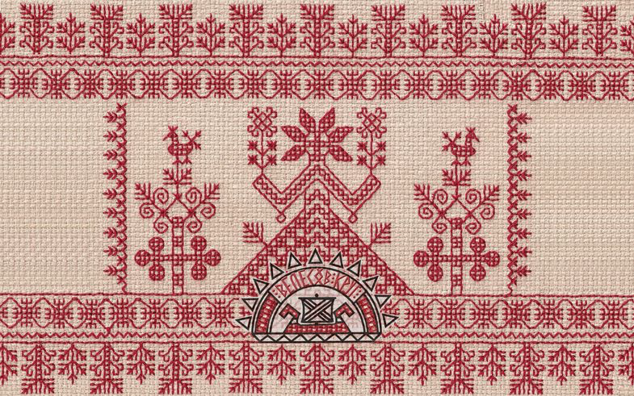
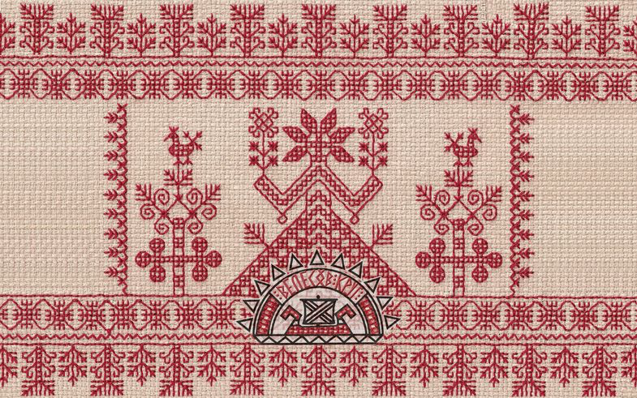

НАШЕ ПЛЕМЯ

ВОЖДЬ
Максим Алексеев

СТАРЕЙШИНА
Паринов Денис
Владимирович

ШАМАН
Владимир Жашков

яhан
ИСТОРИЯ
 
Буряты (бурладууд) — монголоязычный народ, живущий в Восточной Сибири.
В духовной жизни бурят взаимосвязаны три религиозные традиции: буддизм, шаманизм и христианство.
В Прибайкалье существовали пробурятские
племена шоно и нохой в позднем неолите (около 2500 лет до н.э.).
Названия эти являются тотемными и переводятся как «волк» и «собака».
Племя шоно считаются предками булагатов и эхиритов, а нохой — предками хоринцев.
Вероятно, в ходе длительных процессов передвижения племен нохой перешли на восточную сторону Байкала, где и обосновались.
 
